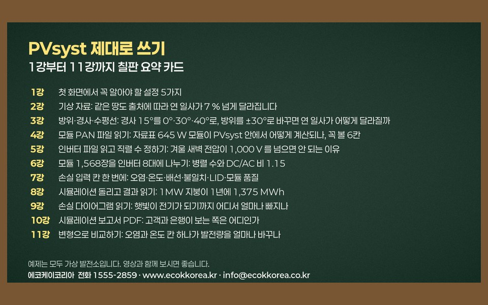

PVsyst 4강: 모듈 PAN 파일에서 꼭 볼 6칸 (645 W 모듈)
PVsyst 모듈 PAN 파일에서 정격 출력·
발행 2026-11-11 · 갱신 2026-11-14
강의 요약
영상의 음성 내용을 글로 정리했습니다. 예제는 모두 가상 발전소입니다.
PVsyst 4강은 모듈 자료가 PVsyst 안에 어떻게 들어 있는지, PAN 파일 하나를 열어 꼭 볼 여섯 칸을 읽습니다. System 단추를 누르면 모듈, 인버터, 직렬과 병렬을 정하는 창이 열립니다. 예제는 서브어레이 8개에 인버터가 한 대씩 붙어 있고, 첫 번째에는 HD현대에너지솔루션 645 W 양면 모듈이 골라져 있습니다. Open을 누르면 이 모듈의 성적표인 PAN 파일이 열립니다.
첫째 칸은 정격 출력 645 W입니다. 표준 조건(일사 1,000 W/㎡, 25 °C) 값이고, 옆의 허용차 +0.8 %는 자료표의 +5 W를 퍼센트로 바꾼 값입니다. 이 값 덕분에 7강의 모듈 품질 칸은 −0.2 %, 곧 손실이 아니라 이득으로 들어갑니다. 둘째, 개방 전압 Voc 57.61 V와 단락 전류 Isc 14.14 A는 직렬 수와 퓨즈를 정할 때 씁니다. 셋째, 최대 출력점 Vmp 47.58 V, Imp 13.56 A를 곱하면 645.2 W로 정격과 맞습니다.
넷째, 셀은 78 직렬에 2줄 병렬, 반쪽 셀 156장입니다. 그늘이 질 때 손실이 이 구조로 계산됩니다. 다섯째, 온도계수는 1 °C 오를 때 전압 0.138 V, 출력 0.29 % 줄어듭니다. 추운 날에는 반대로 전압이 올라가므로 직렬 수를 정할 때 꼭 씁니다. 여섯째, 양면 계수 0.80은 뒷면이 앞면의 80 %만큼 전기를 만든다는 뜻입니다. 지붕처럼 뒷면에 빛이 거의 안 드는 곳에서는 이득이 작습니다.
크기는 1.134 × 2.465 m, 무게 34.7 kg이고, 645 W를 면적으로 나누면 효율 23.1 %입니다. 자료표에 없는 값도 있습니다. 병렬 저항 600 Ω, 직렬 저항 0.226 Ω, 감마 1.04는 흐린 날 효율을 정하는 값이라, 틀리면 연 발전량이 몇 퍼센트 달라집니다. 이 모듈은 일사 200 W/㎡에서 효율이 −2.8 %입니다. 아래쪽에 빨간 경고가 없으면 자료표 값과 PVsyst 계산 값이 맞는다는 뜻입니다.
여섯 칸만 맞으면 모듈은 믿고 써도 됩니다. 다만 실제 현장에서는 목록에 없는 새 모듈이 많고, 받은 파일 값이 자료표나 시험 성적서와 다른 경우도 자주 있습니다. 저희는 설계할 때마다 이 여섯 칸을 성적서와 하나씩 대조한 뒤 계산에 씁니다. 다음 5강에서는 인버터 파일을 열고 −15 °C에서 직렬을 몇 장까지 넣을 수 있는지 계산합니다(16 직렬이면 1,008 V로 한도를 넘음).
화면 메뉴와 핵심 숫자
화면 메뉴 이름
| 화면 영어 이름 | 뜻 |
|---|---|
| System | 모듈· |
| Sub-array | 인버터 단위 묶음 |
| Open | 모듈 PAN 파일 열기 |
| Pnom | 정격 출력 |
| Tol. −/+ | 출력 허용차 |
| Voc · Isc | 개방 전압 · 단락 전류 |
| Vmpp · Impp | 최대 출력점 전압 · 전류 |
| Nb cells in series | 직렬 셀 수 |
| muVoc · muPmp | 전압 · 출력 온도계수 |
| Bifaciality factor | 양면 계수 |
| R shunt · R serie · Gamma | 병렬 저항 · 직렬 저항 · 감마(흐린 날 효율) |
핵심 숫자
| 항목 | 값 |
|---|---|
| 정격 출력 | 645 W, 허용차 +0.8 %(+5 W) |
| Voc · Isc | 57.61 V · 14.14 A |
| Vmp · Imp | 47.58 V · 13.56 A (곱 645.2 W) |
| 셀 구조 | 78 × 2, 반쪽 셀 156장 |
| 온도계수 | 전압 −0.138 V/°C, 출력 −0.29 %/°C |
| 양면 계수 | 0.80 |
| 크기 · 무게 · 효율 | 1.134 × 2.465 m · 34.7 kg · 23.1 % |
| 자료표에 없는 값 | Rsh 600 Ω, Rs 0.226 Ω, 감마 1.04 |
| 일사 200 W/㎡ 효율 | −2.8 % |
자주 묻는 질문
PVsyst PAN 파일에서 무엇을 확인해야 하나요?
정격 출력과 허용차, Voc와 Isc, Vmp와 Imp, 셀 구조, 온도계수, 양면 계수 여섯 칸을 모듈 자료표와 시험 성적서에 대조합니다.
허용차 +0.8 %는 발전량에 어떤 영향을 주나요?
자료표의 +5 W를 퍼센트로 바꾼 값입니다. PVsyst 손실 입력의 모듈 품질 칸이 −0.2 %, 곧 이득으로 들어갑니다(7강).
자료표에 없는 병렬 저항, 직렬 저항, 감마는 왜 중요한가요?
흐린 날 효율을 정하는 값이라 틀리면 연 발전량이 몇 퍼센트 달라집니다. 강의 모듈은 일사 200 W/㎡에서 −2.8 %였습니다.
English summary
Lesson 4 opens a module PAN file in PVsyst and checks six fields on a 645 W bifacial module. Rated power is 645 W with a +0.8 % tolerance (the +5 W on the datasheet), which later appears as a small gain in the module quality loss. Voc is 57.61 V and Isc 14.14 A, used for string length and fuse sizing. Vmp 47.58 V times Imp 13.56 A gives 645.2 W. The cells are 78 in series by 2 (156 half cells). Temperature coefficients are minus 0.138 V/°C and minus 0.29 %/°C, and bifaciality is 0.80. Values not on the datasheet (Rsh 600 Ω, Rs 0.226 Ω, gamma 1.04) set low light efficiency, minus 2.8 % at 200 W/m². English subtitles are available on YouTube (CC). Read this lesson in English
강의 자료 받기
유튜브 채널을 구독하시면 자료가 열립니다
- 아래 빨간 단추를 누르면 유튜브 구독 창이 새로 열립니다.
- 구독을 마치고 이 창으로 돌아오시면 내려받기 단추가 열립니다.
자료는 무료이고 회원가입이 없습니다. 이미 구독 중이시면 같은 단추를 누르고 돌아오시면 됩니다. 한 번 열면 이 브라우저에서는 계속 열려 있습니다.
자료가 열렸습니다. 구독해 주셔서 고맙습니다.

다른 강의 자료와 계산서 견본은 강의 자료 받기 쪽에 모았습니다. 자료는 공부와 참고용입니다. 예제와 견본의 숫자는 가상 발전소이거나 위치를 지운 사례입니다. 실제 설계는 현장 조건을 확인해야 합니다.